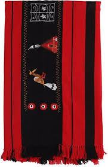

An eminent geographical indication, Naga shawls find their home in the state of Nagaland.
Naga shawls, also known as Chakhesang Shawls, are traditional shawls from the Naga ethnic groups of Nagaland and its neighboring regions in Northeast India. The shawls are known for their distinctive pattern, which is often made with red and black wool
Naga shawls are made from natural materials, mostly cotton and wool. Sometimes, they use silk for more exclusive embroidery. Their creation involves three stages: spinning, dyeing, and weaving. Spinning starts with cleaning and seed removal from cotton, and then it's rolled into a thread using authentic, simple tools.
